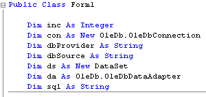
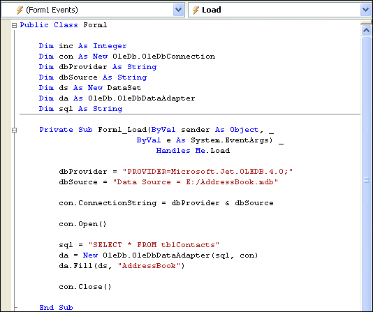
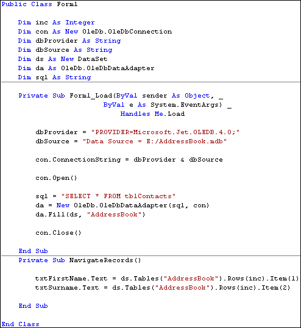
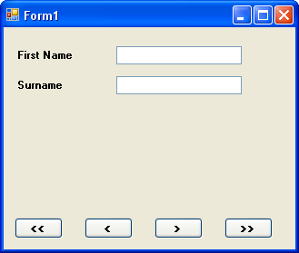
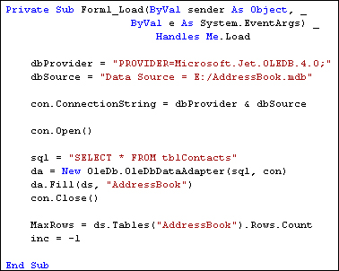

Navigate a Database with VB .NET
Part of an ongoing tutorial. The first part of Databases and VB .NET can be found here:
Coding your own VB .NET database projects
You saw in the previous section that you can navigate through the records of a database by incrementing or decrementing the Row number of the DataSet. In this section, we're going to see a more practical example of how to do that.
To navigate through the dataset, let's change our form. By adding some navigation buttons, we can duplicate what the wizard did. We'll also need to move the code we already have. So let's start with that.
At the moment, all our code is in the Button we added to the form. We're going to delete this button, so we need to move it out of there. The variable declarations can be moved right to the top of the coding window. That way, any button can see the variables. So move your variables declarations to the top, as in the image below (don't forget to add the Dim inc As Integer line):

We can move a few lines to the Form Load event. So, create a Form Load event, as you did in a previous section. Now move all but the textbox lines to there. Your coding window should then look like this (you can delete the message box lines, or just comment them out):

For your button, all you should have left are these two lines:
txtFirstName.Text = ds.Tables("AddressBook").Rows(inc).Item(1)
txtSurname.Text = ds.Tables("AddressBook").Rows(inc).Item(2)
Since we're going to be deleting this button, this code can be moved. Because all the buttons need to put something into the textboxes, the two lines we have left are an ideal candidate for a Subroutine. So add the following Sub to your code:
Private Sub NavigateRecords()
txtFirstName.Text = ds.Tables("AddressBook").Rows(inc).Item(1)
txtSurname.Text = ds.Tables("AddressBook").Rows(inc).Item(2)
End Sub
When we navigate through the DataSet, we'll call this subroutine.
Now that all of your code has gone from your button, you can delete the button code altogether. Return to you form, click on the button to select it, then press the delete key on your keyboard. This will remove the button itself from your form. (You can also right click on the button, and then select Delete from the menu.)
Here's what your coding window should like:

Now you can re-design the form. Add four new buttons, and change the Name properties to: btnNext, btnPrevious, btnFirst, and btnLast. Change the Text properties to >, <, <<, and >>. Your form will then look like this:

Just a couple of more things to set up before we get started. Add a new variable declaration to the top of your code, just under the Dim inc As Integer line. Add this:
Dim MaxRows As Integer
We can store how many rows are in the DataSet with this variable. You can get how many rows are in the DataSet with this:
MaxRows = ds.Tables("AddressBook").Rows.Count
So the Rows property has a Count Method. This simply counts how many rows are in the DataSet. We're passing that number to a variable called MaxRows. You can then test what is in the variable, and see if the inc counter doesn't go past it. You need to do this because VB throws up an error message if try to go past the last row in the DataSet. (Previous versions of VB had some called an EOF and BOF properties. These checked the End of File and Before End of File. These properties have now gone.)
Add the following two lines of code to the Form Load Event of Form1:
MaxRows = ds.Tables("AddressBook").Rows.Count
inc = - 1
Your code should then look like this:

Notice the other line of code for the Form Load event:
inc = - 1
This line sets the inc variable to minus one when the form loads. When the Buttons are clicked, this will ensure that we're moving the counter on by the correct amount.
In the next Part, we'll see how the Buttons on the form work.